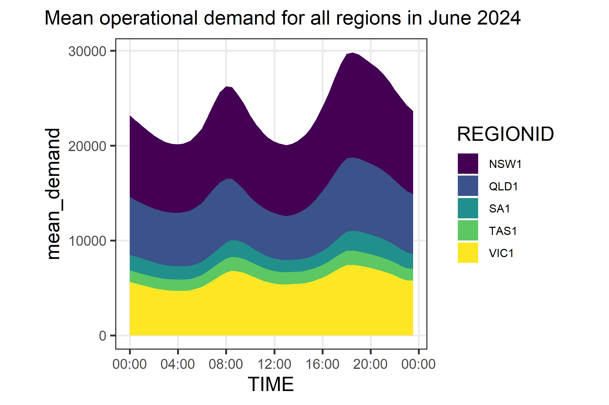
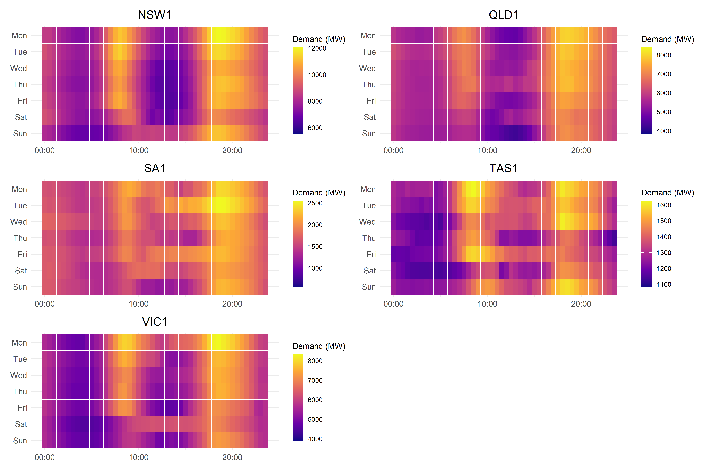
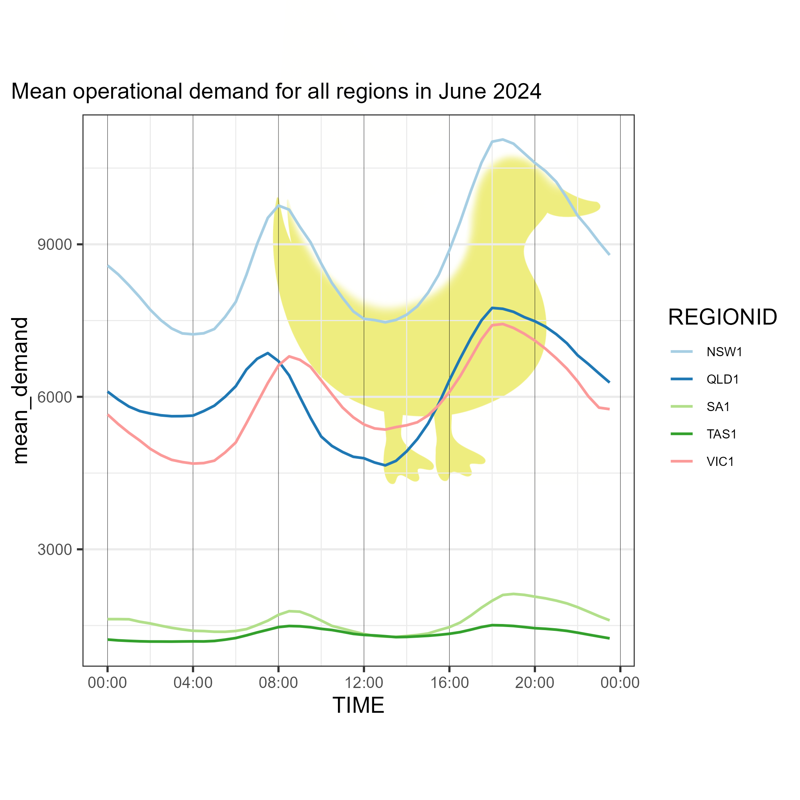
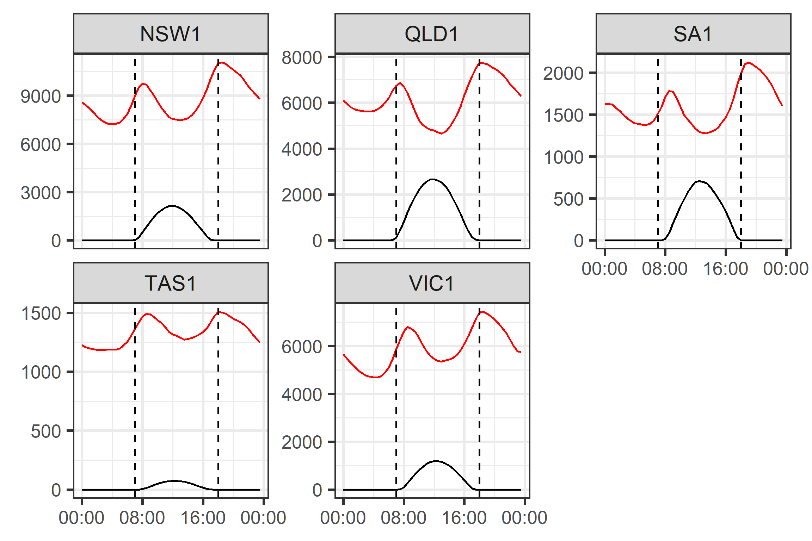

The Duck Curve and the invisible player in the energy market
news
Author
Thanh Cuong Nguyen
Published
September 30, 2024
The Australian National Electricity Market (NEM) is facing challenges due to the increasing integration of distributed energy resources, particularly rooftop solar generation. These energy sources introduce complexity in balancing supply and demand, a task managed by the Australian Energy Market Operator (AEMO). This report explores the impact of the “Duck Curve” on electricity demand patterns and the “invisible” role of rooftop solar in the market.
Problem Description
The integration of distributed solar energy into the NEM is creating challenges for system operators, particularly with the growing penetration of rooftop solar systems. Many experts are discussing these issues, including Matt Rennie from EY, who highlights the “invisibility of distributed energy” as a growing concern for system operators. This phenomenal is commonly known as the “Duck Curve”. It represents the mismatch between energy demand and renewable energy supply, particularly solar energy, throughout the day. The ‘duck shape’ emerges as solar power generation increases in the middle of the day and sharply declines towards the evening, when electricity demand is highest. This curve highlights a challenge for grid operators who must balance this energy supply-demand gap to avoid potential outages or the need for expensive, non-renewable energy sources during peak demand.
Data Description
The data used in this analysis is derived from the National Electricity Market (NEM) operated by the Australian Energy Market Operator (AEMO). The dataset includes hourly energy demand and supply metrics, focusing on solar energy generation, over a given period. The data helps visualise the duck curve by comparing the total demand with solar energy contributions throughout the day.
Based on the official dataset description, the dataset includes the following key variables:
Table 1: Variable description
Variables Name
Data Types
Mean
INTERVAL_DATETIME
date
Date time interval for operational demand value
REGIONID
Varchar2(20)
Region identifier
OPERATIONAL_DEMAND
number(10,0)
Operational demand value
LASTCHANGED
date
Last date and time record changed
As Table 1 shows, the dataset includes information on operational demand, region identifiers, and the date and time of the last record change. This data is essential for understanding the dynamics of energy demand and supply in the NEM. However, since the Interval_Datetime variables is stored as character instead of date as stated in the official record shown above, we need to convert it into a date-time format and break it down for further analysis.
Since AEMO tracked each day of a month in a separated csv file, we need to write a snippet of code to load and combine all the data into one dataset. The data was then cleaned and transformed to facilitate the analysis. The code used to do so is as follows:
Code
# Step 1: List all the CSV files in the folderfolder_path<-"data/Public_Actual_Demand_2024_June"file_list_1<-list.files(path =folder_path, full.names =TRUE)# Step 2: Load and combine all CSV files into one datasetactual_demand_june<-do.call(rbind, lapply(file_list_1, function(file){read_csv(file, skip =2, n_max =240, col_select =-c(1,2,3,4), col_name =FALSE)}))actual_demand_june<-actual_demand_june%>%rename( REGIONID =X5, INTERVAL_DATETIME =X6, OPERATIONAL_DEMAND =X7, OPERATIONAL_DEMAND_ADJUSTMENT =X8, WDR_ESTIMATE =X9, LASTCHANGED =X10)# Step 3: Clean the dataactual_demand_june<-actual_demand_june|>mutate( DATE =as.Date(INTERVAL_DATETIME), TIME =str_extract(INTERVAL_DATETIME, pattern ="\\d{2}:\\d{2}:\\d{2}"), REGIONID =as.factor(REGIONID), OPERATIONAL_DEMAND =as.numeric(OPERATIONAL_DEMAND), OPERATIONAL_DEMAND_ADJUSTMENT =as.numeric(OPERATIONAL_DEMAND_ADJUSTMENT), WDR_ESTIMATE =as.numeric(WDR_ESTIMATE),)actual_demand_june<-actual_demand_june|>mutate(TIME =hms(TIME))
Analysis
In this section, we will explore the Duck Curve by analysing the solar energy contribution throughout the day in comparison with total electricity demand. We will use visualizations to depict how the energy demand shifts across hours of the day and how this contributes to the ‘duck shape.’
Introduction
However, before we dive deeply into the rabbit hole, let’s take a moment to understand the context of how the energy market works and what magic is performed behind the curtain.
Demand and supply in the energy market
The most basic yet important concept in the energy market is the balance between supply and demand. The electricity system operator must ensure that the amount of electricity generated matches the amount consumed at all time. In Australia, this is maintained and operated by the Australian Energy Market Operator (AEMO). They achieve this through 2 key mechanisms:
Real-Time Market Operations: AEMO operates the electricity market in real-time. Generators submit bids to supply electricity, and the market determines the dispatch of power based on demand and supply conditions.
Frequency Control: AEMO closely monitors the electricity grid frequency, which is set at 50 Hz in Australia. This frequency is a key indicator of the balance between supply and demand. When demand exceeds supply, the frequency tends to drop below 50 Hz. Conversely, when supply exceeds demand, the frequency rises above 50 Hz. Maintaining the frequency at or very close to 50 Hz is critical for the stability of the grid.
Thanks to the increasing popularity of rooftop solar panels, many households and businesses are now generating their own electricity. This distributed energy generation has a significant impact on the energy market, as it introduces a new source of supply that is not centrally controlled by AEMO. This is where the “invisible” player comes into play.
The “Duck Curve”
The “Duck Curve” is a term used to describe the shape of the electricity demand curve over the course of a day (Jones-Albertus 2017). The curve gets its name from its resemblance to a duck, with the belly of the duck representing the minimum demand during the day and the neck and head representing the peak demand in the evening.

Figure 1: Mean operational demand for all regions in June 2024
We can see the change of this curve over the course of the day, with the lowest demand occurring in the early hours of the morning and the highest demand occurring in the evening. This pattern is consistent across all regions, with some variation in the magnitude of demand. It is also important to note that this pattern is repeated every day, regardless of the day of the week, as shown in Figure 2 below:

Figure 2: Heatmap of operational demand for all regions in June 2024
Can you see the duck now?

Quack quack, Here I am.
Key results and method: Rooftop solar generation estimation
Due to the fact that AEMO can not directly regulated and control the output of rooftop solar panels, they have to come up with a mechanism to manage the impact of distributed energy generation on the grid. Based on the dataset that AEMO provided to the public, which can be found here, they have somehow managed to estimate the output of rooftop solar generation in each region. The data included:
REGIONID: The region where the data was collected.
INTERVAL_DATETIME: The date and time of the interval.
POWER: The estimated output of rooftop solar generation in megawatts (MW).
The data was batch-loaded, transform from interval datetime into date, weekday and time in the day with the break of 30 minutes. The data dictionary was also published by AEMO can be found at this link. Figure 3 shows the mean rooftop solar generation for all regions in the NEM over the course of the day. The x-axis represents the time of day, while the y-axis represents the mean demand in red and the mean generation of solar in black. The plot is faceted by region, allowing us to see how rooftop solar generation varies across different parts of the NEM.

Figure 3: Mean operational demand and rooftop solar generation for all regions in June 2024
We can see that despite of the fact that AEMO did not have a mechanism to directly track and manage the output of the rooftop solar generator, their model did performed quite well and successfully capture the impact of these distributed energy resources on the grid.
Conclusion
In conclusion, the “Duck Curve” and the “invisible” role of rooftop solar generation are two key factors shaping the future of the Australian energy market. This provide an opportunity for the energy market to evolve and adapt to the changing landscape of distributed energy resources. By understanding these dynamics and developing innovative solutions, we can ensure a reliable and sustainable energy future for all Australians.